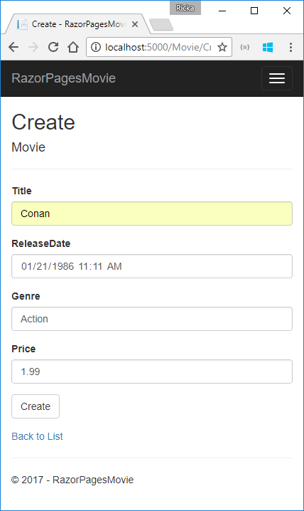

Adding a model to a Razor Pages app in ASP.NET Core with Visual Studio for Mac
In this section, you add classes for managing movies in a database. You use these classes with Entity Framework Core (EF Core) to work with a database. EF Core is an object-relational mapping (ORM) framework that simplifies the data access code that you have to write.
The model classes you create are known as POCO classes (from "plain-old CLR objects") because they don't have any dependency on EF Core. They define the properties of the data that are stored in the database.
In this tutorial, you write the model classes first, and EF Core creates the database. An alternate approach not covered here is to generate model classes from an existing database.
View or download sample.
Add a data model
- In Solution Explorer, right-click the RazorPagesMovie project, and then select Add > New Folder. Name the folder Models.
- Right-click the Models folder, and then select Add > New File.
In the New File dialog:
- Select General in the left pane.
- Select Empty Class in the center pain.
- Name the class Movie and select New.
Add the following properties to the Movie class:
using System;
namespace RazorPagesMovie.Models
{
public class Movie
{
public int ID { get; set; }
public string Title { get; set; }
public DateTime ReleaseDate { get; set; }
public string Genre { get; set; }
public decimal Price { get; set; }
}
}
The ID field is required by the database for the primary key.
Add a database context class
Add a DbContext derived class named MovieContext.cs to the Models folder.
using Microsoft.EntityFrameworkCore;
namespace RazorPagesMovie.Models
{
public class MovieContext : DbContext
{
public MovieContext(DbContextOptions<MovieContext> options)
: base(options)
{
}
public DbSet<Movie> Movies { get; set; }
protected override void OnModelCreating(ModelBuilder modelBuilder)
{
modelBuilder.Entity<Movie>().ToTable("Movie");
}
}
}
The preceding code creates a DbSet property for the entity set. In Entity Framework terminology, an entity set typically corresponds to a database table, and an entity corresponds to a row in the table. The DbSet property name is Movies. Since the database uses singular names, the sample overrides OnModelCreating to use the singular form (Movie) for the table name.
Add a database connection string
Add a connection string to the appsettings.json file.
{
"Logging": {
"IncludeScopes": false,
"LogLevel": {
"Default": "Warning"
}
},
"ConnectionStrings": {
"MovieContext": "Data Source=MvcMovie.db"
}
}
Register the database context
Register the database context with the dependency injection container in the Startup.cs file.
public void ConfigureServices(IServiceCollection services)
{
// requires
// using RazorPagesMovie.Models;
// using Microsoft.EntityFrameworkCore;
services.AddDbContext<MovieContext>(options =>
options.UseSqlite(Configuration.GetConnectionString("MovieContext")));
services.AddMvc();
}
Right click on a red squiggly line, for example MovieContext in the line services.AddDbContext<MovieContext>(options =>. Select Quick Fix > using RazorPagesMovie.Models;. Visual studio adds the using statement.
Build the project to verify you don't have any errors.

Entity Framework Core NuGet packages for migrations
The EF tools for the command-line interface (CLI) are provided in Microsoft.EntityFrameworkCore.Tools.DotNet. To install this package, add it to the DotNetCliToolReference collection in the .csproj file. Note: You have to install this package by editing the .csproj file; you can't use the install-package command or the package manager GUI.
To edit a .csproj file:
- Select File > Open, and then select the .csproj file.
- Select Options.
- Change Open with to Source Code Editor.

Add the Microsoft.EntityFrameworkCore.Tools.DotNet tool reference to the second <ItemGroup>:
<ItemGroup>
<DotNetCliToolReference Include="Microsoft.VisualStudio.Web.CodeGeneration.Tools" Version="2.0.0" />
<DotNetCliToolReference Include="BundlerMinifier.Core" Version="2.5.357" />
<DotNetCliToolReference Include="Microsoft.EntityFrameworkCore.Tools.DotNet" Version="2.0.0" />
</ItemGroup>
Add scaffold tooling and perform initial migration
From the command line, run the following .NET Core CLI commands:
dotnet add package Microsoft.VisualStudio.Web.CodeGeneration.Design
dotnet restore
dotnet ef migrations add InitialCreate
dotnet ef database update
The add package command installs the tooling required to run the scaffolding engine.
The ef migrations add InitialCreate command generates code to create the initial database schema. The schema is based on the model specified in the DbContext (In the Models/MovieContext.cs file). The Initial argument is used to name the migrations. You can use any name, but by convention you choose a name that describes the migration. See Introduction to migrations for more information.
The ef database update command runs the Up method in the Migrations/<time-stamp>_InitialCreate.cs file, which creates the database.
Scaffold the Movie model
- Open a command window in the project directory (The directory that contains the Program.cs, Startup.cs, and .csproj files).
Run the following command:
dotnet aspnet-codegenerator razorpage -m Movie -dc MovieContext -udl -outDir Pages/Movies --referenceScriptLibraries
If you get the error:
The process cannot access the file
'RazorPagesMovie/bin/Debug/netcoreapp2.0/RazorPagesMovie.dll'
because it is being used by another process.
Exit Visual Studio and run the command again.
The following table details the ASP.NET Core code generators` parameters:
| Parameter | Description |
|---|---|
| -m | The name of the model. |
| -dc | The data context. |
| -udl | Use the default layout. |
| -outDir | The relative output folder path to create the views. |
| --referenceScriptLibraries | Adds _ValidationScriptsPartial to Edit and Create pages |
Use the h switch to get help on the aspnet-codegenerator razorpage command:
dotnet aspnet-codegenerator razorpage -h
Test the app
- Run the app and append
/Moviesto the URL in the browser (http://localhost:port/movies). Test the Create link.

- Test the Edit, Details, and Delete links.
If you get the following error, verify you have run migrations and updated the database:
An unhandled exception occurred while processing the request.
SqliteException: SQLite Error 1: 'no such table: Movie'.
Microsoft.Data.Sqlite.SqliteException.ThrowExceptionForRC(int rc, sqlite3 db)
Add the Pages/Movies files to the project
- In Visual Studio, Right-click the Pages folder and select Add > Add existing Folder.
- Select the Movies folder.
- In the Chosse files to include in the project dialog, select Include All.
The next tutorial explains the files created by scaffolding.